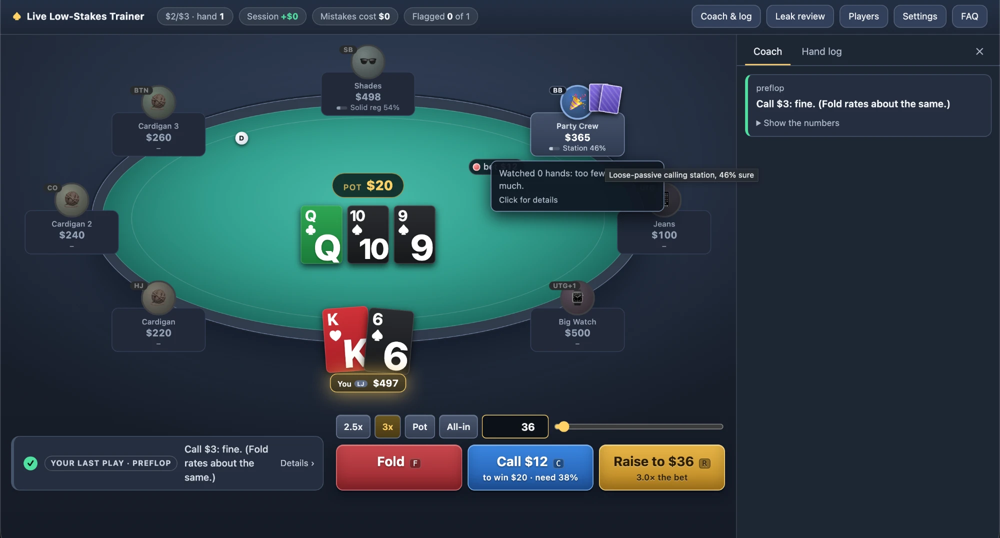
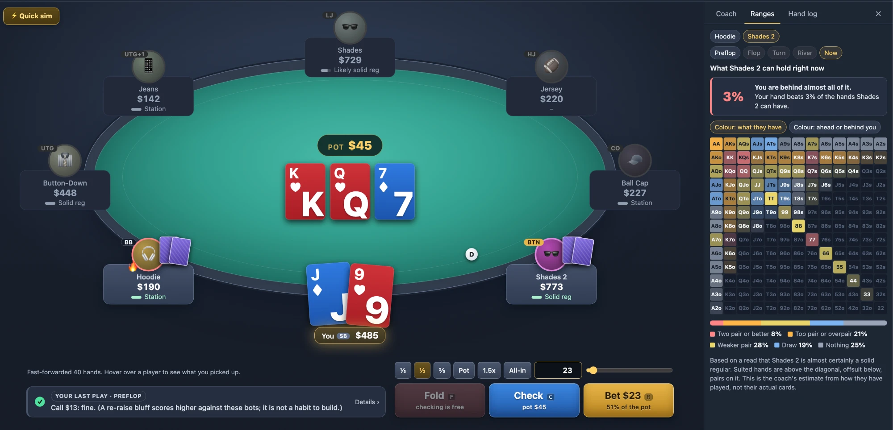
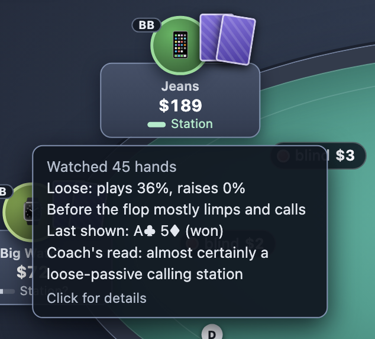
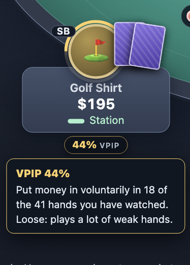
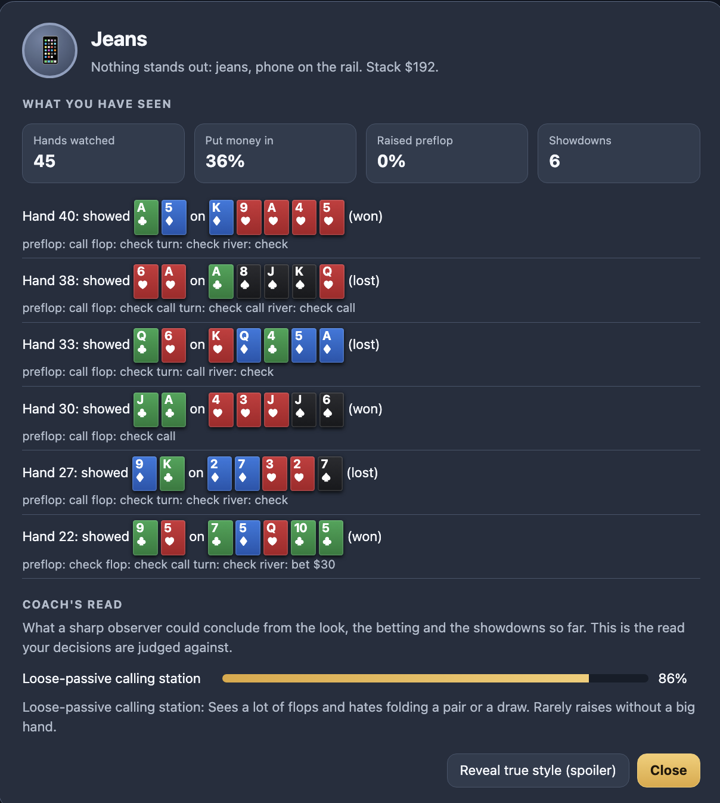

Game Theory Optional
GTO usually stands for game theory optimal. At your table, it's optional.
Practice against the players actually in your game.
A free poker trainer for live low-stakes cash games and home games. Sit down with limpers, calling stations, nits and the odd maniac, and get graded on the money your decisions make against them, not on what a solver would do.
- Free
- No ads
- No account
- Runs in your browser
- Open source

Graded in dollars, not solver approval
Every decision is played out thousands of times against the hands these opponents can hold. If your play clearly loses money against them, the coach flags it and tells you what it cost and why.

See their range, and where you stand
The Ranges tab draws an opponent's likely hands on the standard hand chart and narrows it with every bet. One number tells you how much of that range you beat right now.



Opponents that stay in character
Nine player types, each their own variation. A player's look only hints at how they play; the read builds from their betting and the hands they show down.
Find your leak, then drill it
Mistakes are grouped by type and ranked by cost. Pick one and the trainer deals you only that kind of spot until it stops costing you.
Your game, your players
Casino tables from $1/$3 to $3/$5 with real rake, or a home game with your own stakes and line-up. If a player type doesn't match the people in your game, change it with a slider.
What it is not
These opponents are easier to beat than real people, and only their preflop habits are based on measured data. Trust the direction of the advice more than the dollar figures. The coach holds back on advice that only works against bots, so it will not push you to bluff more.
Think a verdict is wrong?
Hit Disagree on any flagged play. It captures the hand so you can send it to us, and those reports are how the opponents get better.